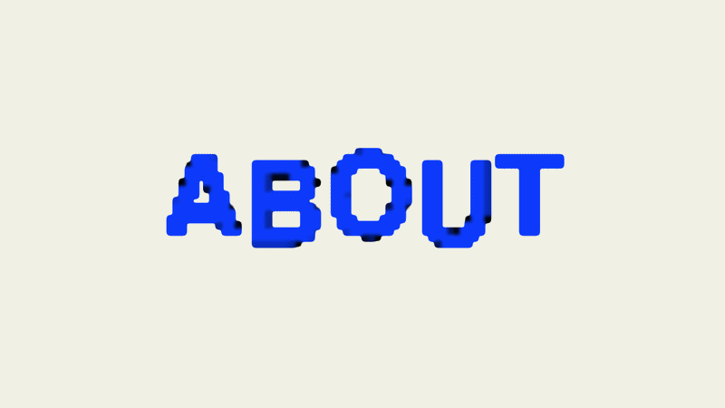

✶ Hi, my name is Adi Barzilay, and I’m a 3rd year Visual Communication student at Bezalel Academy of Arts and Design in Jerusalem.
My work explores vibe coding, interactive items and image making in the movement. I’m fascinated by the way visuals, rhythm, sound and interaction can come together to create experiences that feel alive.
I enjoy experimenting with movement in space, playful interactions, and unexpected ways of building narratives. Alongside that, I love combining these ideas with web design, especially in shaping the overall feeling of a project, from its structure and interaction to the smallest visual details.
my projects